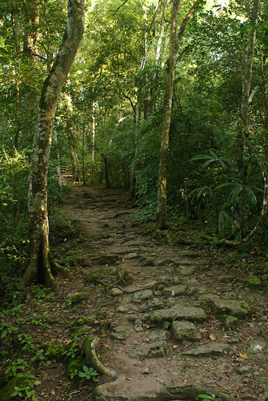

|
Εξοπλισμός - Εφόδια: Κάθε συλλογή επιβίωσης θα πρέπει να περιλαμβάνει απωθητικά εντόμων, όπως και είδη για την αντιμετώπιση της φαγούρας του δερμάτος, των δαγωμάτων απο φίδια κ.λ.π. |
| Ιματισμός: Ελαφρά και χαλαρά ρούχα που θα καλύπτουν πλήρως το σώμα είναι τα πιο κατάλληλα σε ένα τροπικό περιβάλλον, λόγω φυσικά της υπερβολικής ζέστης και υγρασίας που επικρατεί στην περιοχή. | |
| Υγειονομικοί κίνδυνοι: Προβλήματα μυκητιάσεων, δυσεντερίας, δηλητηριάσεις και επικράτηση του φόβου και πανικού είναι τα πιο συνήθη περιστατικά σε τροπικές περιοχές. | |
| Έντομα και Φυτά: Κουνούπια, μυρμήγκια, αράχνες, φίδια, μέλισσες και σφήκες, βδέλλες κ.α. είναι οι συνηθισμένες ενοχλήσεις που θα δεχθεί κάποιος στην ζούγκλα. | |
| Διαβάστε περισσότερα... |
 |
Υλικά κατασκευής: Τα τροπικά δάση είναι γεμάτα από μεγάλα, πλατύφυλλα δέντρα, τα οποία είναι ιδανικά για κατασκευή καταφυγιών. Επίσης ευδοκιμούν όλα τα είδη μπαμπού που είναι ιδιαίτερα χρήσιμα ως υλικό. |
| Είδη κατασκευής: Διακρίνονται σε αιώρες, κρεβάτια από πασσάλους, καταφύγια από φυτά ατάπ, επίγειες καλύβες, καλύβες πάνω στα δέντρα, κρεβάτια για ύπνο σε ελώδεις περιοχές. | |
| Άναμμα φωτιάς: Η φωτιά στις τροπικές περιοχές μπορεί να χρησιμεύσει με ποικίλους τρόπους όπως για μαγειρική, θέρμανση ή απώθηση εντόμων. | |
| Διαβάστε περισσότερα... |
| Βρόχινο νερό: Δέκα λεπτά βροχής σε ένα τροπικό δάσος θα δώσει μερικά λύτρα πόσιμου νερού, αν απλωθεί ένα αδιάβροχο τύπου πόντσο. | |
| Νερό απο φυτά: Υπάρχουν πολλά φυτά από τα οποία μπορείτε να πιείτε νέρο - ωστόσο θα πρέπει να προφυλάγεστε από τυχόν προηγούμενους "ένοικους" του φυτού. | |
 |
Φυτά: Το τροπικό περιβάλλον είναι πλούσιο σε φυτική ζωή κατάλληλη για διατροφή όπως ξύλα μπαμπού, αγριόσυκα κ.α. |
| Ζώα: Τα φαγώσιμα ζώα περιλαμβάνουν πιθήκους, αγριογούρουνα, πουλιά, ψάρια, ερπετά και τρωκτικά. | |
| Διαβάστε περισσότερα... |
|  | Τα τροπικά δάση παρουσιάζουν έναν δρόμο με εμπόδια. Η βλάστηση θα είναι συνήθως πολύ πυκνή και η διάνοιξη ενός μονοπατιού είναι βραδεία και εξαντλητική για αυτό και η πορεία σε ευθεία γραμμή είναι συχνά αδύνατη. |
Οι βασικοί κανόνες μετακινήσεων μέσα σε τροπικές περιοχές είναι:
|
|
| Διαβάστε περισσότερα... |